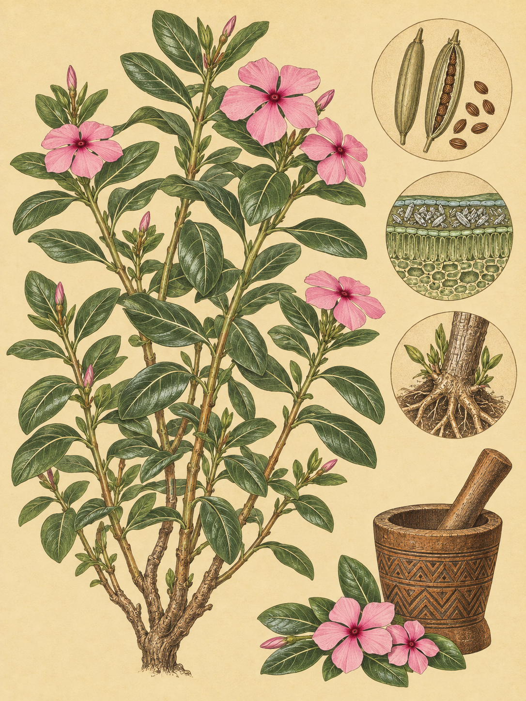

KÜSTE MOMBASA
Catharanthus roseus
Swahili: „Olubinu“

Am Rand eines Weges an der Küste von Mombasa kann eine Blüte aussehen, als hätte jemand fünf rosige Flächen um ein dunkles Auge gelegt. Der Strauch steht an Wegrändern, auf offenen Feldern, an Klippen und auf sandigen Böden nahe menschlicher Siedlungen. Seine Blätter glänzen grün, ihre helle Mittelrippe zeichnet sich deutlich ab. Doch die auffällige Blüte ist nur die sichtbare Seite der Geschichte. Im Gewebe dieser Pflanze entsteht ein chemisches Verteidigungssystem, das für Menschen zugleich eine medizinische Entdeckung und ein Konflikt wurde.
Der wissenschaftliche Name erzählt zunächst von der Blüte. Catharanthus setzt sich aus den griechischen Wörtern „katharos“ für „rein“ und „anthos“ für „Blüte“ zusammen. Das Artepitheton roseus lässt sich mit „rot“, „rosa“ oder „rosig“ übersetzen. Carl von Linné nahm die Pflanze 1759 unter dem Namen Vinca rosea in sein binominales System auf. 1837 ordnete der schottische Botaniker George Don sie der Gattung Catharanthus zu. In der botanischen Geschichte trug sie außerdem mehrere ältere Namen. Auch Lochnera rosea ist als älterer Name überliefert. Der deutsche Name Madagaskar-Immergrün erinnert an ihre ursprüngliche Heimat, die trockenen Küsten im Osten und Süden Madagaskars.
Die Pflanze wächst als immergrüner, mehrjähriger Halbstrauch oder als krautige Pflanze. Schlanke, fleischige Stängel kommen aus einer holzigen Basis, die den Strauch trägt, und wachsen aufrecht oder anliegend. Sie kann 0,7 bis 1,0 Meter hoch und ebenso breit werden. In jedem Stängel sitzen die Blätter gegenständig, immer paarweise. Sie sind oval bis länglich, unbehaart und glänzend. Ihre Länge reicht von 2,5 bis 9,5 Zentimetern, ihre Breite von 1,0 bis 3,5 Zentimetern. Das ganze Gewebe führt weißen Milchsaft. Wird die Pflanze oberflächlich zurückgeschnitten oder folgt auf eine Kälteperiode wärmere Umgebung, treibt sie hauptsächlich aus basalen Achselknospen oder direkt aus dem Wurzelsystem neu aus.
Die Blüten sitzen an den Stängelenden oder in den Blattachseln. Jede hat fünf kronblattartige Lappen und misst etwa 2 bis 5 Zentimeter im Durchmesser. Die Farben reichen von reinem Weiß über Rosa und Violett bis zu dunklem Pink. Im Zentrum liegt häufig ein dunkleres, rotes „Auge“. Die rosafarbene Pigmentierung verursacht das Anthocyanidin Rosinidin. Nach der Befruchtung bildet sich ein Paar von Balgfrüchten. Die Samen darin sind gerippt, zusammengedrückt und ohne Haarschopf. Die Blüten sind zwittrig. An der kenianischen Küste blüht und fruchtet die Pflanze unter tropischen Äquatorbedingungen das ganze Jahr über.
Ihre Heimat liegt an trockenen Küsten Madagaskars, doch durch menschliche Einführung wurde die Pflanze in den Tropen und Subtropen weltweit eingebürgert, darunter in Kenia, Australien, Indien und den südlichen USA. Sie wächst auf sandigen, lehmigen und tonigen Böden, außerdem auf nährstoffarmen Felsböden und Sanddünen. Stark saure bis stark alkalische Böden und Bodensalz erträgt sie. Einmal etabliert, gilt sie als äußerst dürretolerant. Sie kann sich selbst befruchten, wird aber häufig von Schmetterlingen und Bienen bestäubt. Ameisen, Wind und Wasser verbreiten die Samen lokal. Für eine Langstreckenausbreitung über 100 Meter besitzt sie keine besondere Anpassung. Die weltweite Verbreitung geht deshalb vor allem auf Menschen zurück, etwa durch kontaminierten Boden oder Gartenabfälle.
Die eigentliche Überraschung beginnt mit einem angefressenen Blatt. Die Pflanze bildet verschiedene Alkaloide, darunter Vindolin und Catharanthin. Die beiden entstehen zunächst an verschiedenen Orten: Catharanthin in den äußeren Zellen und Vindolin im Inneren des Blattes. Später gelangen sie in gemeinsame Zellräume. Für Insekten sind diese einzelnen Bausteine kaum giftig. Wird die Pflanze von einem Fraßfeind beschädigt, führt sie sie zusammen. Es entsteht ein hochgiftiger Stoff, aus dem auch Vinblastin und Vincristin hervorgehen. Eine Pflanze, die still am Weg steht, reagiert also auf einen Fraßschaden mit einer Veränderung ihrer chemischen Abwehr. Kältestress wirkt in die entgegengesetzte Richtung und unterdrückt diese Bildung.
Für Menschen wurde gerade diese Abwehr zum medizinischen Schatz. Die natürlichen Mengen der Stoffe sind klein, deshalb erschwert ihre Gewinnung die Forschung. 1949 bemerkte Halina Czajkowski Robinson in einem Tierversuch, dass ein Pflanzenextrakt nicht den Blutzucker veränderte, aber die Zahl der weißen Blutkörperchen sinken ließ. In den 1950er Jahren isolierte Gordon Svoboda für Eli Lilly Vinblastin und Vincristin. Das Unternehmen patentierte beide Verbindungen 1958 und entwickelte daraus die Krebsmedikamente Oncovin und Velban. Der Anstoß kam auch aus überliefertem Wissen malagassischer und jamaikanischer Heiler. Die indigene Bevölkerung Madagaskars erhielt dafür keine finanzielle Entschädigung. Der medizinische Erfolg blieb deshalb mit der Frage verbunden, wem Wissen und Gewinn gehören.
Am Ende der langen Trockenzeit überdauert der Strauch die Hitze vermutlich immergrün. Mit den ersten Niederschlägen der kleinen Regenzeit treibt er aus den basalen Knospen neu aus und setzt seine Blüten- und Samenproduktion fort. In Australien wird er wegen unkontrollierter Ausbreitung als Umweltunkraut bekämpft. In Madagaskar ist die Wildpopulation gefährdet. Dieselbe Pflanze kann also an einem kenianischen Weg blühen, in einem Arzneimittel weiterwirken und an einem anderen Ort zum Problem werden.
An der Küste von Mombasa beginnt die Geschichte wieder bei einer einzelnen Blüte. Fünf Lappen liegen um das dunkle Auge, während Bienen und Schmetterlinge zwischen den Blüten wechseln. Unter der glänzenden Oberfläche wartet die chemische Abwehr bereits auf das nächste Blatt.
In Ost- und Südafrika verwendeten traditionelle Heiler die Pflanze laut einem Bericht von 1962 gegen nicht näher bezeichnete Geschlechtskrankheiten. Aus Blättern und Wurzeln wurde außerdem ein Dekokt gekocht, das gegen Malaria, Rheuma, Asthma und Menstruationsbeschwerden getrunken wurde. Frischer Blattsaft wurde äußerlich aufgetragen, um Blutungen zu stoppen, Wespengift zu neutralisieren oder Hautentzündungen zu lindern. Diese Angaben beschreiben überlieferte oder dokumentierte Nutzungen, sie sind keine Empfehlung zur Behandlung.
Für Menschen ist die Pflanze stark giftig. Verzehr und das Einatmen ihres Rauchs sind gefährlich. Weidetiere, die größere Mengen fressen, können Neurotoxizität, niedrigen Blutdruck, Anfälle, Anämie und den Tod erleiden. Gleichzeitig ist ihr globaler Status nicht eindeutig: Einige Quellen nennen sie als nicht bewertet, andere als nicht gefährdet. In Australien wird sie in Westaustralien und Queensland wegen unkontrollierter Ausbreitung als Umweltunkraut bekämpft. Auf Madagaskar ist die Wildpopulation gefährdet. Zwischen 2018 und 2023 wurden dort 35.800 Tonnen medizinischer Pflanzen exportiert. Die lokalen Erntearbeiter verdienten dabei oft nur 2 bis 2,5 US-Dollar pro Tag, und weniger als 45 Prozent dieses Handels verliefen legal.
Wo und wann: Am Mtwapa Creek an der Küste von Mombasa in den frühen Morgenstunden oder am späten Nachmittag nach Pflanzen an sandigen Böden, Felsen und Wegrändern suchen. Dann auf Bienen oder Schmetterlinge warten, die die Blüten anfliegen.
Brennweite: 100 bis 400 mm, um einen Bestäuber auf einer Blüte zu isolieren, ohne seine Fluchtdistanz von etwa ein bis zwei Metern zu unterschreiten.
Bild-Idee: Eine Blüte mit dunklem „Auge“ und anfliegendem Schmetterling, sodass die fünf Kronblätter und die Bewegung des Bestäubers zugleich sichtbar bleiben.